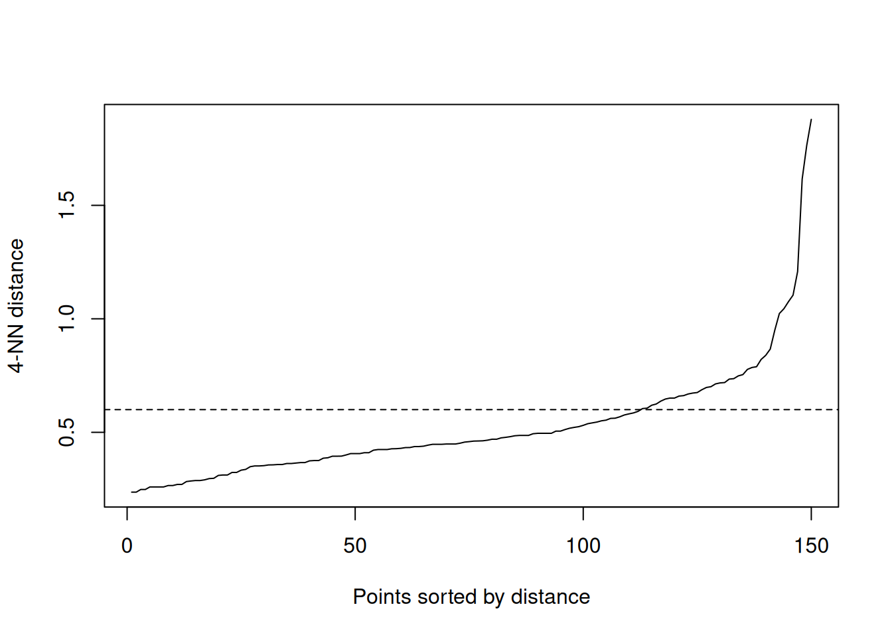
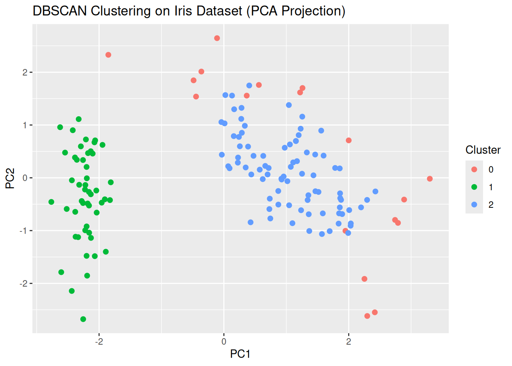

Clustering is used when you want to label your data but you are not sure how. It is a form of unsupervisedlearning. Clustering involves grouping a set of data points into clusters, such that points within the same cluster are more similar to each other than to those in other clusters, based on some similarity or distance metric.
K-Means
One of the most popular types of clustering models is K-Means.
K-Means groups data into clusters where each cluster is roughly circular (in 2D) or spherical (in higher dimensions) around its “centroid.” A centroid is the geometric center or the “average” point of a set of points in a multidimensional space.
A key assumption is that these spherical clusters are of equal variance. K-Means uses Euclidean distance to assign points to the nearest cluster center — and all points that are equidistant to a center form a hypersphere. A hypersphere is the generalization of a circle (2D) and sphere (3D) to n-dimensional space.
📌 Key point- this makes clusters are shaped like blobs around the center — not elongated or skewed.
Strengths: Fast, simple, works well with large datasets.
Limitations: Requires the number of clusters (k) to be specified; not great with non-spherical or varying-density clusters.
R package: [stats::kmeans()], also cluster and factoextra for visualization.
Hierarchical
Another popular type of clustering model is Hierarchical clustering. There are two methods: Agglomerative (bottom-up) or divisive (top-down).
Here is an easy way to understand a bottom-up clustering method.
Start with every data point as its own cluster.
Find the two closest clusters (based on a distance metric like Euclidean distance).
Merge them into one cluster.
Repeat this until all data points are merged into a single cluster (or until a stopping condition is met).
It’s a good choice when you want to understand the hierarchy or nested structure of your data.
Output: Dendrogram (tree of clusters).
Strengths: Does not require predefined k; good for nested structures. A k is typically the number of clusters you want to form.
Limitations: Computationally expensive for large datasets.
R package: stats::hclust(), dendextend, cluster.
DBSCAN
Still another popular type of clustering mode is DBSCAN (Density-Based Spatial Clustering of Applications with Noise) clustering.
The “density-based” part of DBSCAN refers to how the algorithm defines clusters based on the density of data points in a region, rather than using predefined numbers of clusters (like k-means) or assuming specific cluster shapes.
✅ Why is it popular?
There is no need to specify the number of clusters in advance (unlike K-means).
It can find arbitrarily shaped clusters, not just spherical ones.
Robust to outliers — it can identify noise points as a separate class.
Core Concepts ε (epsilon): Radius around a point to look for neighboring points.
MinPts: Minimum number of points within ε radius to form a dense region.
Core Point: Has at least MinPts within ε.
Border Point: Within ε of a core point but has fewer than MinPts.
Noise Point: Not a core or border point.
Here is an example of DBSCAN. The iris data set is used here, even though it is already labeled.
The following package(s) will be installed:
- dbscan [1.2.2]
These packages will be installed into "~/work/Machine-Learning-Clearly-Explained/Machine-Learning-Clearly-Explained/renv/library/R-4.2/x86_64-pc-linux-gnu".
# Installing packages --------------------------------------------------------
- Installing dbscan ... OK [linked from cache]
Successfully installed 1 package in 5.3 milliseconds.
install.packages("ggplot2")
The following package(s) will be installed:
- ggplot2 [3.5.2]
These packages will be installed into "~/work/Machine-Learning-Clearly-Explained/Machine-Learning-Clearly-Explained/renv/library/R-4.2/x86_64-pc-linux-gnu".
# Installing packages --------------------------------------------------------
- Installing ggplot2 ... OK [linked from cache]
Successfully installed 1 package in 4.3 milliseconds.
library(dbscan)
Attaching package: 'dbscan'
The following object is masked from 'package:stats':
as.dendrogram
library(ggplot2)# Load the iris dataset and check out the first six observationsdata(iris)head(iris)
# Use only the numeric features (remove the species label)iris_data <- iris[, 1:4]# Scale the data (DBSCAN is sensitive to scale)iris_scaled <-scale(iris_data)# Plot kNN distances to estimate a good value for epskNNdistplot(iris_scaled, k =4)abline(h =0.6, lty =2) # use your visual judgment here for eps

This plot helps you choose a good eps value. You’re looking for the “elbow” of the curve.
# Run DBSCAN with eps and minPtsdb <-dbscan(iris_scaled, eps =0.6, minPts =4)# Check clustering resultsdb$cluster # Cluster labels (0 means noise)
# Add cluster labels to the original datairis$Cluster <-as.factor(db$cluster)# Visualize the clusters (using first two PCA components for clarity)pca <-prcomp(iris_scaled)iris_pca <-data.frame(pca$x[,1:2], Cluster = iris$Cluster)ggplot(iris_pca, aes(PC1, PC2, color = Cluster)) +geom_point(size =2) +labs(title ="DBSCAN Clustering on Iris Dataset (PCA Projection)")

📝 Notes
eps (epsilon): A maximum distance between two samples to be considered neighbors.
minPts: A minimum number of points required to form a dense region.
The elbow/k-distance plot helps you pick a good eps. Here is an example of an elbow/k-distance plot:
Here is another example of DBSCAN.
# Install required packages if not already installedinstall.packages("dbscan")
The following package(s) will be installed:
- dbscan [1.2.2]
These packages will be installed into "~/work/Machine-Learning-Clearly-Explained/Machine-Learning-Clearly-Explained/renv/library/R-4.2/x86_64-pc-linux-gnu".
# Installing packages --------------------------------------------------------
- Installing dbscan ... OK [linked from cache]
Successfully installed 1 package in 4.3 milliseconds.
install.packages("ggplot2")
The following package(s) will be installed:
- ggplot2 [3.5.2]
These packages will be installed into "~/work/Machine-Learning-Clearly-Explained/Machine-Learning-Clearly-Explained/renv/library/R-4.2/x86_64-pc-linux-gnu".
# Installing packages --------------------------------------------------------
- Installing ggplot2 ... OK [linked from cache]
Successfully installed 1 package in 4.3 milliseconds.
# Load librarieslibrary(dbscan)library(ggplot2)# Sample data: Simulated delivery locations (lat, lon)set.seed(42)n <-100lat <-c(rnorm(n, mean =40.7128, sd =0.01), rnorm(n, mean =40.7306, sd =0.01))lon <-c(rnorm(n, mean =-74.0060, sd =0.01), rnorm(n, mean =-73.9352, sd =0.01))data <-data.frame(lon, lat)# Run DBSCANdb <-dbscan(data, eps =0.02, minPts =5)# Plot the resultsdata$cluster <-as.factor(db$cluster)ggplot(data, aes(x = lon, y = lat, color = cluster)) +geom_point(size =2) +labs(title ="DBSCAN Clustering of Delivery Points", x ="Longitude", y ="Latitude") +theme_minimal()